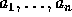

| Cipher |
Bob and Alice started to use a brand-new encoding scheme. Surprisingly it
is not a Public Key Cryptosystem, but their encoding and decoding
is based on secret keys. They chose the secret key at their last
meeting in Philadelphia on February 16th, 1996. They chose as a secret
key a sequence of n distinct integers,  , greater than
zero and less or equal to n. The encoding is based on the following principle.
The message is written down below the key, so that characters in the message
and numbers in the key are
correspondingly aligned. Character in the message at the position i is
written in the encoded message at the position  , where
, where  is the corresponding number in the key. And then the encoded message is
encoded in
the same way. This process is repeated k times. After kth encoding they
exchange their message.
is the corresponding number in the key. And then the encoded message is
encoded in
the same way. This process is repeated k times. After kth encoding they
exchange their message.
The length of the message is always less or equal than n. If the message is shorter than n, then spaces are added to the end of the message to get the message with the length n.
Help Alice and Bob and write program which reads the key and then a sequence of pairs consisting of k and message to be encoded k times and produces a list of encoded messages.
The input file consists of several blocks. Each block has a number in the first line. The next line contains a sequence of n numbers pairwise distinct and each greater than zero and less or equal than n. Next lines contain integer number k and one message of ascii characters separated by one space. The lines are ended with eol, this eol does not belong to the message. The block ends with the separate line with the number 0. After the last block there is in separate line the number 0.
Output is divided into blocks corresponding to the input blocks. Each block contains the encoded input messages in the same order as in input file. Each encoded message in the output file has the lenght n. After each block there is one empty line.
10 4 5 3 7 2 8 1 6 10 9 1 Hello Bob 1995 CERC 0 0
BolHeol b C RCE